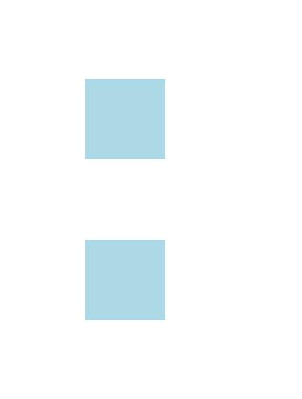
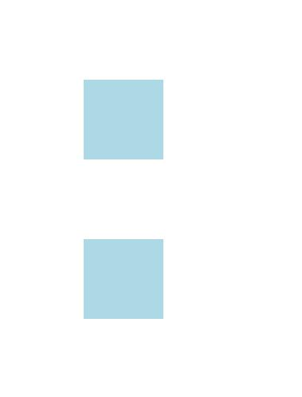
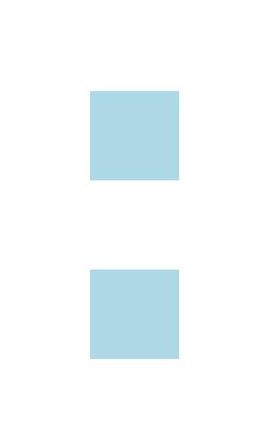
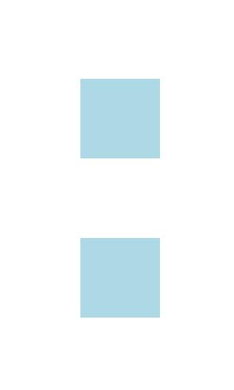
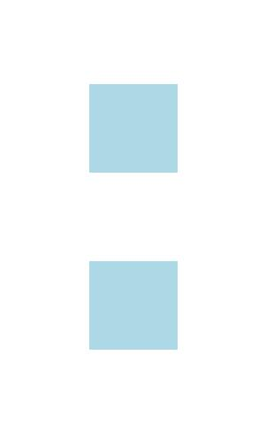
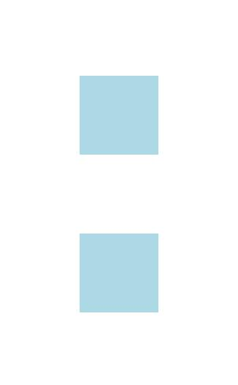

info
代码
div{ width: 100px; height: 100px; background: lightblue; margin: 100px; } <div></div> <div></div>
bfc01-效果截图
IE8-浏览器模式：IE8标准模式，文档模式：IE8标准模式

IE8-浏览器模式：IE8兼容模式，文档模式：IE7

IE8-浏览器模式：IE7，文档模式：IE7

IE8-浏览器模式：IE8兼容模式，文档模式：QUIRKS

CHROME

FIREFOX
